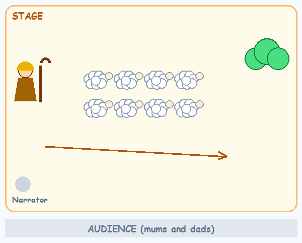
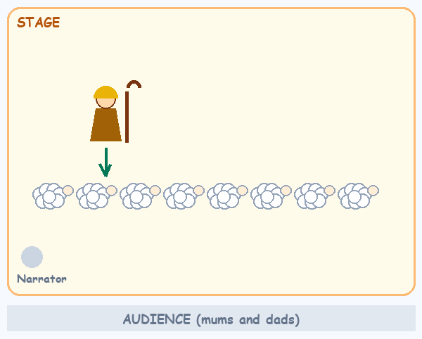
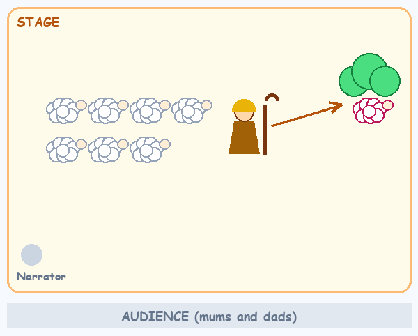
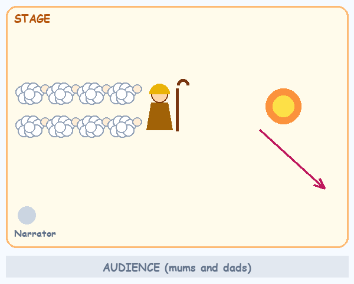
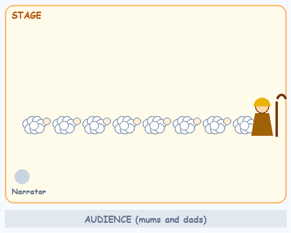

Everything the leaders and helpers need to rehearse and run the skit: who does what, where everyone stands, the narrator's script, the children's lines, a rehearsal plan, and the run sheet for the day. About 6 minutes on stage.
| Role | Who | Their job |
|---|---|---|
| Shepherd | The leader or a confident helper | On stage the whole time. Leads the lambs, counts them, finds the lost lamb, stands beside each child who speaks. Quietly prompts the children with gestures. |
| Narrator | A helper with a clear voice | Stands at the front corner with the script (section 3). Reads the story, starts each scene, and says any forgotten line with the child. |
| Lamb wrangler | A helper, crouched at the side, off stage | Calms nerves, fixes headbands, steers a wanderer back, holds a child who won't go on. Hands the lost lamb its cue to tiptoe off. |
| Sound helper | Anyone with the laptop or phone | Plays the song track at the finale (or signals the pianist). Plays nothing during the scenes. |
| Lion (optional) | A playful helper or older sibling | Enters only in Scene 4. Soft, silly roar, slow moves, smiling. Exits the moment the Shepherd taps the staff. |
| Lambs | Every child | Baa, follow the Shepherd, say one line, count, sing with actions. |
| Lost lamb | One confident child | Tiptoes behind the bush in Scene 3 and gives the tiny "baa". Choose in April; keep a second child ready as backup. |
The audience sits at the bottom of each map. The pink lamb is the lost lamb. Keep the children facing the audience whenever they speak or sing.





Print this page for the Narrator. Grey lines are stage directions, not read aloud. Pause after every line so the children can act.
Lambs curled up asleep, centre stage. Wait for quiet.
NARRATOR: Once upon a time, a shepherd had a flock of little lambs. Every morning, he came to wake them up.
Shepherd walks in.
SHEPHERD (to audience): Mums and dads, when I say "Come, little lambs!", you help my lambs and say BAA! Let's practise… Come, little lambs!
AUDIENCE: BAA!
SHEPHERD: Come, little lambs! LAMBS + AUDIENCE: BAA!
Lambs stand and follow the Shepherd round the stage, then sit on their tape marks.
NARRATOR: The shepherd took his lambs to green grass and cool water. The lambs were happy. Listen to what they say.
Each child stands, says their line, sits. The Shepherd stands beside each one.
ALL LAMBS (standing): Jesus is my Shepherd!
NARRATOR: But one little lamb saw a butterfly… and followed it far, far away.
Lost lamb tiptoes behind the bush.
NARRATOR: At night, the shepherd counted his lambs.
SHEPHERD: Let's count them. Help me, lambs! (everyone counts aloud)
ALL LAMBS (hands on cheeks): ONE IS MISSING!
SHEPHERD: I will find my lost lamb! … (searching) Have you seen my lamb?
LOST LAMB (small voice): Baa…
Shepherd finds the lamb, hugs, walks back holding hands.
ALL LAMBS: HOORAY!
— Scene 4, only if you're doing it —
NARRATOR: One night, a lion came…
Lion creeps in, soft roar. Lambs huddle behind the Shepherd.
SHEPHERD: Go away, lion! These are MY lambs! (staff tap; Lion runs off)
ALL LAMBS: Our Shepherd keeps us safe!
— Finale —
NARRATOR: A good shepherd looks after his lambs. And Jesus is OUR Good Shepherd.
Lambs stand on their marks in one row.
ALL: The Lord is my shepherd. He gives me everything I need.
Song starts: "Jesus Is My Shepherd" with actions. Bow.
ALL LAMBS: BAA!
One line per child. Cut out, write the child's name on the back, and send it home in January so parents can practise. Short lines go to the youngest or shyest children.
Each rehearsal is 5 minutes inside a normal meeting, unless marked. Stop while they're still enjoying it.
| When | What to do | They're ready when… |
|---|---|---|
| Oct–Dec every meeting | Song at Good-baa. Play "Come, little lambs!" → "BAA!" as a game (Scene 1). Play Find the Lost Lamb and Count the Flock as games (Scene 3). Don't call it a skit yet. | They sing the song and do the actions without you leading |
| January, week 1 | Tell them: "We're going to do a play for the mums and dads!" Show the skit walkthrough video. Hand out line cards to take home. | Every child knows which line is theirs |
| Jan–Feb weekly | Practise Scene 2 only: sit in a row, stand, say your line to the back wall, sit. Make the lamb headbands (one 15-min craft). | Every child says their line with only a small prompt |
| March, week 1 | Put down the tape marks. Walk through Scenes 1–2–3 slowly, no costumes. Shepherd and Narrator read from the script. | Children know where to sit and stand |
| March weekly | One scene per week, then the finale. Add Scene 4 only if no one is scared. | Each scene runs without stopping |
| April once | First full run, in headbands. Choose the lost lamb (and a backup). Time it. | The skit runs start to end in about 6 min |
| May 2 sessions, 15 min | Dress rehearsals in the real room, full costume, with the sound helper. Film one and send it to parents. | Smooth enough to enjoy. Perfect is not the goal |
| Cue | What happens |
|---|---|
| Program leader introduces the Little Lambs | Wrangler leads the lambs in to curl up centre stage |
| Room quiet | Narrator: "Once upon a time…" |
| Scenes 1–4 | About 5 min. Sound helper stands by |
| "…He gives me everything I need." | Sound helper starts the song track (or the pianist plays) |
| Last note | Bow, "BAA!", follow the Shepherd off |
| Off stage | Headbands back in the bag, then the investiture ceremony |